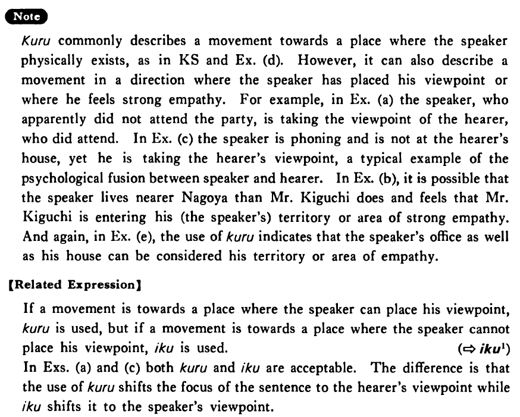

来る・くる (1) (B. 219)
- (ks).
- 田中さんが明日うちへ・に来る・来ます。
- Mr. Tanaka will come to my house tomorrow.
- (a).
- ナンシーは昨日パーティーに来ましたか。
- Did Nancy come to the party yesterday?
- (b).
- 来週木口さんが名古屋に来るそうだ。
- I was told that Mr. Kiguchi is coming to Nagoya next week.
- (c).
- もし、もし、家内が来たら直ぐ帰るように言って下さい。
- Hello, please tell my wife to come home right away if she (literally: comes to see you) drops by.
- (d).
- 今日はまだ新聞が来ない。
- Today's newspaper hasn't come yet.
- (e).
- 僕の研究室に明日来て下さい。
- Please come to my office tomorrow.
